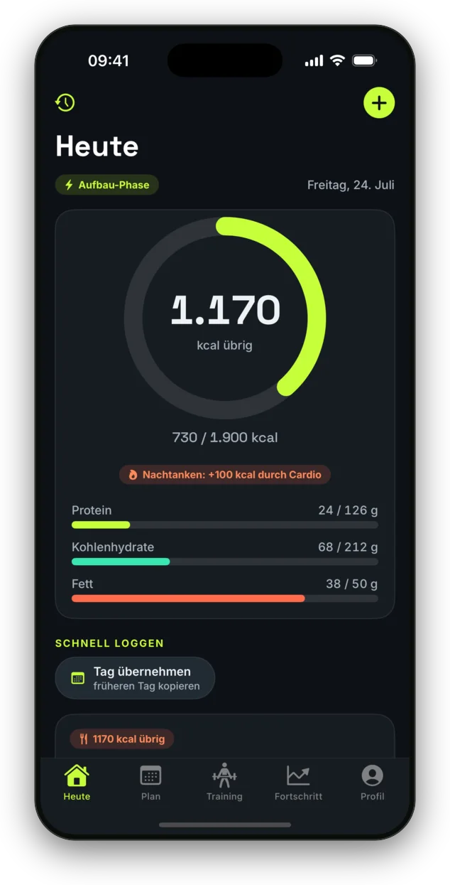
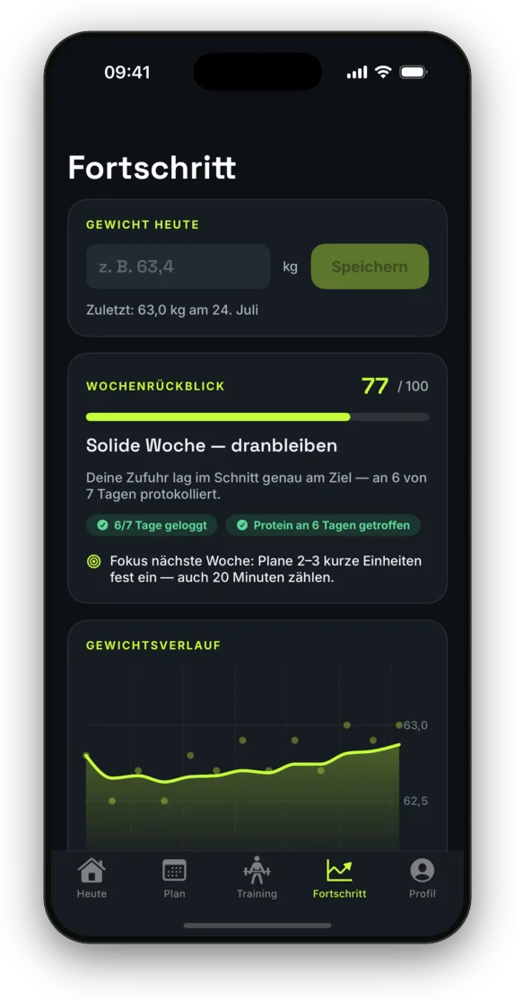
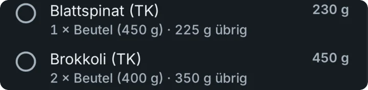
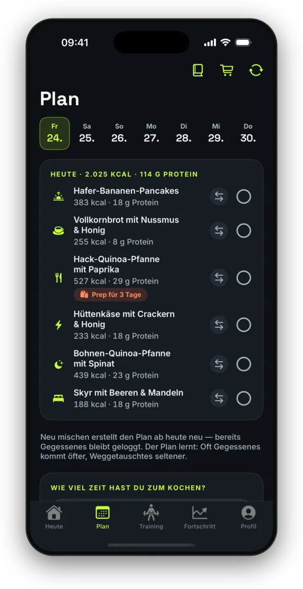
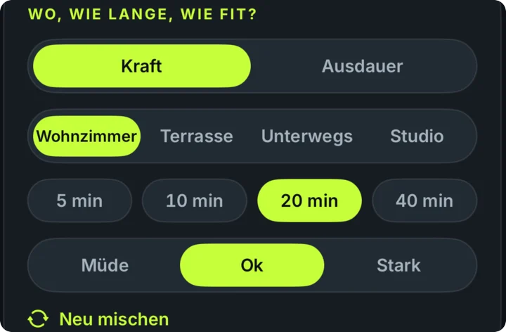
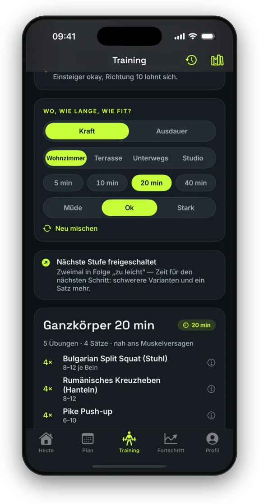
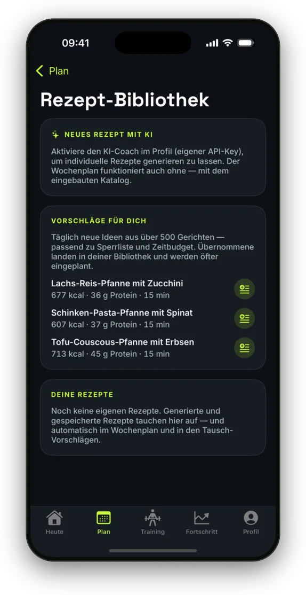

Für iPhone · Deutschsprachig · Ohne Konto
Aufbau statt
Diät.
Die App für alle, denen Zunehmen schwerfällt. GAINZ misst deinen echten Bedarf, macht die Kalorien machbar — und bringt dich zum Training, auch ohne Studio.
Bald im App Store · iPhone, iOS 17 oder neuer

Kennst du das?
Zunehmen ist kein
Abnehmen in Rückwärtsgang.
Fast jede Ernährungs-App ist dafür gebaut, dich weniger essen zu lassen. Wenn du das Gegenteil brauchst, arbeitest du gegen das Werkzeug.
„Ich esse doch schon so viel — und nehme trotzdem nicht zu.“
„Jede App will, dass ich abnehme. Ich will das Gegenteil.“
„Kein Studio in der Nähe. Und abends keine Kraft mehr.“
„Die Waage zeigt seit Wochen dasselbe. Warum weitermachen?“
Warum Kalorien-Rechner scheitern
Formeln schätzen.
Dein Körper rechnet anders.
Formel sagte
1.648
Echte Messung
816
Eine professionelle Sportanalyse ergab bei 63 kg Körpergewicht einen gemessenen Grundumsatz von rund 816 kcal — über 800 kcal unter dem, was Standardformeln vorhersagen. Wer sein Ziel aus so einer Formel ableitet, isst nie im Überschuss und wundert sich, warum nichts passiert.
Ein realer Einzelmesswert, kein Durchschnitt — aber genau der Grund, warum GAINZ dein Ziel nicht aus einer Formel ableitet, sondern aus deinen echten Daten berechnet und in kleinen Schritten anhebt.
So funktioniert es
Vier Probleme. Vier Antworten.
Dein Ziel wird gemessen, nicht geraten
GAINZ rechnet deinen realen Erhaltungsbedarf aus protokollierter Zufuhr und geglättetem Gewichtstrend — und hebt das Ziel behutsam an, statt dich mit einer Wunschzahl zu überfordern.
- Erhaltungsbedarf aus Ø Zufuhr minus Gewichtstrend
- Alle 1–2 Wochen +100–150 kcal, solange der Trend passt
- Zielrate 0,25–0,5 % Körpergewicht pro Woche
- Protein 1,6–2,2 g/kg — bleibt konstant, auch wenn die kcal niedrig sind

Der Plan macht die Menge machbar
Das Problem ist selten der Wille, sondern die Menge: Du bist satt, bevor das Ziel erreicht ist. GAINZ verteilt die Kalorien auf sechs Slots — volle Mahlzeiten und bewusst kaloriendichte Snacks.
- Wochenplan aus über 500 Gerichten, respektiert Sperrliste und glutenfrei
- Kochmodus: schnell ≤ 15 min, Meal Prep oder gemischt
- Einkaufsliste in echten Packungsgrößen — mit Resteverwertung
- Loggen per Suche, Barcode-Scan oder Ein-Tipp-Snack


Trainiere da, wo du gerade bist
Kein Studio, keine Zeit, keine Kraft — das sind die drei häufigsten Gründe aufzuhören. Deshalb fragt GAINZ nur: Wo bist du, wie lange hast du, wie fit bist du? — und legt ein fertiges Workout hin.
- Wohnzimmer, Terrasse, unterwegs oder Studio
- 5, 10, 20 oder 40 Minuten — auch „müde“ ist eine gültige Antwort
- Automatische Progression: mehr Wiederholungen, schwerere Varianten, Deload
- Kraft und Ausdauer getrennt steuerbar, mit Schutz für die Erholung


Dranbleiben, ohne schlechtes Gewissen
Bei 0,25 % Zunahme pro Woche schweigt die Waage wochenlang. Wer nur auf sie schaut, hört auf. GAINZ belohnt deshalb das, was du kontrollieren kannst.
- Wochenrückblick mit Prozess-Score statt Tagesrauschen
- Vergebende Serie mit Joker-Woche — ein verpasster Tag zählt nicht
- Wenn-Dann-Pläne, die dich mit deinen eigenen Worten erinnern
- Widget mit Ein-Tipp-Snack, höchstens eine Erinnerung am Tag
- Über 500 Gerichte und optionale KI-Rezepte gegen Langeweile

In 60 Sekunden
Das Problem, die Wendung, die Lösung.
Ohne Ton gebaut: alle Aussagen stehen im Bild. In 1080p ansehen
Deine Daten
Bleiben, wo sie hingehören.
Alles auf dem Gerät
Mahlzeiten, Gewicht und Trainings liegen lokal auf deinem iPhone. Ein Backup in deiner privaten iCloud ist optional — wir bekommen nichts davon zu sehen.
Kein Konto, kein Tracking
Keine Registrierung, keine Analyse-Tracker, keine Werbung, keine Weitergabe an Datenhändler. Und ein Knopf, der wirklich alles löscht.
KI nur, wenn du willst
Der KI-Coach ist standardmäßig aus und läuft mit deinem eigenen Schlüssel (Mistral, EU). Vor der ersten Übertragung wird ausdrücklich gefragt — Gewichts- und Gesundheitswerte bleiben hier.
Details in der Datenschutzerklärung.
Auf Evidenz gebaut
Keine Bro-Science.
Die Regeln hinter Plan und Training kommen aus der Sportwissenschaft und Verhaltensforschung — nicht aus dem Bauch.
Muskelaufbau
Niedrige Last bis nahe Muskelversagen wirkt für Hypertrophie ähnlich wie hohe Last (Schoenfeld) — deshalb funktioniert Heimtraining. Zielvolumen 10–20 harte Sätze pro Muskel und Woche, Protein 1,6–2,2 g/kg.
Dranbleiben
Wenn-Dann-Pläne sind der stärkste bekannte Adhärenz-Hebel. Gewohnheiten brauchen im Schnitt rund 66 Tage (Lally) — deshalb vergibt die Serie einen Ausrutscher statt ihn zu bestrafen.
Fragen
Kurz erklärt.
Ist GAINZ nur ein weiterer Kalorienzähler?
Nein — die Richtung ist umgekehrt. GAINZ ist dafür gebaut, einen erreichbaren Überschuss zu treffen, statt ein Defizit zu überwachen. Das Kalorienziel wird aus deinen echten Daten kalibriert und schrittweise angehoben; dazu kommen Trainingsplanung und eine Verhaltens-Engine gegen Ausreden.
Brauche ich ein Fitnessstudio?
Nein. GAINZ ist für Heimtraining entwickelt: Körpergewicht, Widerstandsbänder, Klimmzugstange, verstellbare Hanteln oder einfach Stuhl und Wand. Wenn du Zugang zu einem Studio hast, schaltet der Ort „Studio“ zusätzlich schwere Grundübungen frei.
Was, wenn ich meinen Grundumsatz nicht kenne?
Kein Problem — der Messwert ist optional und dient höchstens als Startschätzung. GAINZ startet bewusst niedrig und ermittelt deinen realen Bedarf in den ersten 10–14 Tagen aus Logging und Gewichtstrend.
Brauche ich einen KI-Schlüssel?
Nein. Wochenplan, Training, Coach-Hinweise und Fortschritt laufen vollständig ohne KI. Wenn du magst, kannst du einen eigenen API-Schlüssel hinterlegen, um Texte natürlicher formulieren und zusätzliche Rezepte erzeugen zu lassen. Jede Bewertung und Berechnung bleibt in der App.
Funktioniert die App offline?
Ja. Katalog, Übungsbibliothek und alle Berechnungen liegen auf dem Gerät. Online braucht es nur die Lebensmittelsuche (Open Food Facts) und optionale KI-Funktionen — fällt die Verbindung weg, greift die lokale Suche.
Ist das eine medizinische Beratung?
Nein. GAINZ ist eine Wellness-App und ersetzt keine ärztliche Beratung, Diagnose oder Behandlung. Bei Untergewicht oder vor einer Ernährungsumstellung bitte ärztlich abklären.
Wann kommt die App?
Version 1.0 ist fertig und wird für die Einreichung im App Store vorbereitet. Schreib uns eine kurze Mail, dann melden wir uns, sobald sie da ist: gainz@jakob-bennemann.de
Hör auf zu schätzen.
Fang an zu messen.
GAINZ kommt bald in den App Store. Hinterlass uns eine Zeile, dann bekommst du eine einzige Mail — wenn es losgeht.